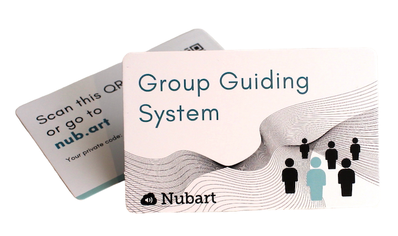

Nubartのよくある質問（FAQ）について
一般
カードに印刷された個別のコードは、デジタルコンテンツへの排他的アクセスを可能にする鍵のような役割を果たします。来場者は、QRコードを読み取ってコンテンツに直接アクセスしたり、QRコードに慣れていない場合は、Webページにある英数字のコードを入力したりすることができます。
Nubartでは、LWAC技術(int. pat. pending)を開発し、カードを譲渡できないようにしました。
LWACを使えば、スマートフォンだけでなく、PCやタブレットからも、数ヶ月後、数年後にも、何度でもコンテンツにアクセスできます。 しかし、そのカードを他の人が使うことはできません。
このようにして、オーディオガイドの小売価値を確保し、収集した匿名データの高い品質を保証しています。
また、それに加えてこれらの個別コードにより、従来のPWAでは実現できなかった様々なサービスを提供することができます。ツアーガイドシステム、キャッチ＆アンサーゲーム、カード会員への特別割引...。
Nubartでは、LWAC技術(int. pat. pending)を開発し、カードを譲渡できないようにしました。
LWACを使えば、スマートフォンだけでなく、PCやタブレットからも、数ヶ月後、数年後にも、何度でもコンテンツにアクセスできます。 しかし、そのカードを他の人が使うことはできません。
このようにして、オーディオガイドの小売価値を確保し、収集した匿名データの高い品質を保証しています。
また、それに加えてこれらの個別コードにより、従来のPWAでは実現できなかった様々なサービスを提供することができます。ツアーガイドシステム、キャッチ＆アンサーゲーム、カード会員への特別割引...。

音声ガイドの音声トラックはストリーミング配信されているため、来場者がクリックした音声のみがモバイルデータを消費します。 これは、コンテンツをすべてダウンロードしなければならない多くのアプリとは異なる点です。クリックしたオーディオトラックの消費量は1分あたり0.46MBで、Spotifyなどの音楽ストリーミングサービスの5倍です。
そのため、もしあなたの会場が良好なデータ通信環境を備えているならば、音声ガイドカードを提供するために来場者に無料のWi-Fiを提供する必要はありません。
ですが、ネットワーク環境の悪い会場のために、オフラインモードを開発しました。オフラインモードでは、すべてのオーディオトラックが一時的に携帯電話のRAMにダウンロードされ、アプリをインストールする必要はありません。これにより、ダウンロード後、オフラインでもオーディオトラックを聴くことができます。
そのため、もしあなたの会場が良好なデータ通信環境を備えているならば、音声ガイドカードを提供するために来場者に無料のWi-Fiを提供する必要はありません。
ですが、ネットワーク環境の悪い会場のために、オフラインモードを開発しました。オフラインモードでは、すべてのオーディオトラックが一時的に携帯電話のRAMにダウンロードされ、アプリをインストールする必要はありません。これにより、ダウンロード後、オフラインでもオーディオトラックを聴くことができます。
はい、色、フォント、プレーヤー、要素間の間隔、画像のフレームなどを指定して、御社のためのカスタムレイアウトを作成することができます。このカスタマイズには料金がかかります。
Nubartでは、環境への配慮をしています。
カードの印刷に使用する環境配慮型の素材を選ぶことができます。
カードの印刷に使用する環境配慮型の素材を選ぶことができます。
- 高強度の特殊ダンボール、FSC認証取得。
- リサイクルされたPVC。
- 生分解性バイオPVC。
はい、私たちの地図はアクセス可能です。
カードのQRコードは、視覚障害者が指先で認識してQRスキャナーで取り込めるように、レリーフ状に印刷されています。
社内のCMSは、ユニバーサルデザインで開発されています。
詳しくはブログでご紹介しています。
Nubartのオーディオガイドはバリアフリーになっています。
カードのQRコードは、視覚障害者が指先で認識してQRスキャナーで取り込めるように、レリーフ状に印刷されています。
社内のCMSは、ユニバーサルデザインで開発されています。
詳しくはブログでご紹介しています。
Nubartのオーディオガイドはバリアフリーになっています。
音声ガイド
私たちの目的は、この仕事量を最大限に減らすことです。
原則として、写真と少しの情報があれば大丈夫です。私たちは、お客様に情報を提供し、さまざまな段階でお客様の承認を得ることで、すべてを解決します。
原則として、写真と少しの情報があれば大丈夫です。私たちは、お客様に情報を提供し、さまざまな段階でお客様の承認を得ることで、すべてを解決します。
音声ガイドカードの配布方法は、美術館によって異なります。
例えば。
例えば。
- 来場者を増やすためのプロモーションとして、無料で配布する（例：特定の日）。
- スポンサーとのパートナーシップの一環として無料で提供する。
- 入場料の一部として無料で提供する。
- コストや投資をカバーする価格でガイドを販売する。
- ガイドを販売して利益を出す。
最も一般的なモデルは、ほとんどすべてのデジタル機能を備えた地図を製品として販売することです。新しいオーディオガイドカードは、いつでも再注文できます。
音声ガイドカードを入場料に組み込んで販売したいと考えている多忙な美術館・博物館には、定額制の契約を提案することができます。
年間10万人以上の来館者がある美術館・博物館で、オーディオガイドカードを付加的に販売したいと考えている場合には、レベニューシェアを検討することができます。
音声ガイドカードを入場料に組み込んで販売したいと考えている多忙な美術館・博物館には、定額制の契約を提案することができます。
年間10万人以上の来館者がある美術館・博物館で、オーディオガイドカードを付加的に販売したいと考えている場合には、レベニューシェアを検討することができます。
今では、ほとんどの人が自分のヘッドフォンを持ち歩いています。 しかし、そうでない場合、訪問者は音量を下げ、電話のようにスマートフォンを使うのではなく、下側のスピーカーを耳に当てればよいのです。 音声ガイドは、オーディオブックや音楽のように連続して聴くものではなく、短い音声トラックを個別に聴くものなので、これは大きな問題ではありません。 お客様の中には、ヘッドホンを提供していない方も多くいらっしゃいます。
。
しかし、もしあなたの会場にヘッドフォンが不可欠だと思うなら、私たちに注文しても、他の業者から入手しても構いません。

。
しかし、もしあなたの会場にヘッドフォンが不可欠だと思うなら、私たちに注文しても、他の業者から入手しても構いません。
現在、私たちのシステムは、アラビア語やヘブライ語などの25以上の言語をサポートしています。しかし、まだサポートされていない言語を統合することに興味がある場合は、追加費用なしでシステムを適応させます。
ツアーガイドシステム Nubart Live
1時間に約20MBです。ストリーミングで音楽を聴いたり、ビデオを見たりするよりもはるかに少ないです。
もちろんです。パーソナライズカードの最小注文数は3,000枚です。
下記のNubartのデザインが気に入った場合、最低発注数は500枚です。
個別にデザインされたカードをご希望の場合は、最低注文数が3,000枚です。
個別にデザインされたカードをご希望の場合は、最低注文数が3,000枚です。

Nubartの印刷された地図を購入すると、500枚の注文につき2人のツアーガイドを利用できます。より多くの地図を注文していただくことで、より多くのツアーガイドの方々がシステムにアクセスできるようになります。5,000枚の地図が入ったプロフェッショナルパッケージを購入すれば、ツアーガイドの数は無制限です。
アプリや当社のようなブラウザベースのシステムに関わらず、インターネットを介して通信する際には、送信者と受信者の間に1秒以下のわずかな遅延（レイテンシー）が発生することは避けられません。 SkypeやZoomなどのシステムでご存知の方も多いと思います。
遅延は、スマートフォンの性能やインターネット回線の品質など、いくつかの要素に影響されます。ツアーガイドは、反響効果を妨げないように、できるだけ小さな声で話すことをお勧めします。
遅延は、スマートフォンの性能やインターネット回線の品質など、いくつかの要素に影響されます。ツアーガイドは、反響効果を妨げないように、できるだけ小さな声で話すことをお勧めします。
技術的には、個々のQRを生成して、デジタル搭乗券のようにスマートフォンからスキャンしてもらうことも可能です。しかし、私たちのカードを支持する理由はいくつかあります。
- 誰もがQRコードの読み取り方を知っているわけではありません。このカードでは、英数字のコードを入力することで、別の方法を提供しています。
- いつも遅れて参加する人がいますが、私たちのカードには説明が書いてあるので、ガイドはそれを素早くスキャンして、黙って手渡すだけです。デジタルオンリーのシステムでは、こんなにスムーズなことはありません！
- 参加者は、携帯電話の電池切れなどの問題が発生しても、いつでもコードを再入力またはスキャンすることができます。
- カードの譲渡はできませんが、参加者は自分のカードを複数のツアーで再利用することができます。
電話に出たいときは、「ミュート」をクリックするだけで出られます。
グループを保留したまま、電話をかけることができます。話が終わったら、ブラウザに戻ってください。 グループ内のすべての参加者が緑色に点灯していない場合は、ページを再読み込みするだけで、すべての接続が自動的に復元され、参加者のQRコードを再度スキャンする必要はありません。
注意してください。Androidを使用していて、ライブガイドの「ミュート」をクリックし忘れた場合、参加者はあなたが電話をかけてきた相手に何を言っているのかが、聞こえている状態になっています。一方、iPhoneを使用している場合は、自分も相手もグループには聞こえません。
注意してください。Androidを使用していて、ライブガイドの「ミュート」をクリックし忘れた場合、参加者はあなたが電話をかけてきた相手に何を言っているのかが、聞こえている状態になっています。一方、iPhoneを使用している場合は、自分も相手もグループには聞こえません。
いいえ。 旅行の最初に、グループ内のすべてのカードをスキャンするだけで、セッションを開くことができます。
そのセッションは、あなたや旅行者がブラウザを閉じても、あなたのNubartアカウントに保存されます。もし、他のメンバーがいても、その人のカードをスキャンするだけで、すでに開かれているグループに追加することができます。とても便利ですね！
グループのメンバーだけが、自分のカードを再度スキャンしてグループに戻る必要があります。
その際、カードを保管してもらうことを忘れないでください。
ブラウザベースのオーディオとビデオの同期
動画の海賊版を心配されている方も、私たちのプラットフォームは、一般的な動画ホスティングプラットフォームよりもはるかに安全なソリューションを提供していますので、ご安心ください。オリジナルをアップロードする必要もありません。
現場でビデオを再生するには、ローカルのハードディスクからオリジナルのビデオを再生すれば、ローカルのコンピュータから離れることはありません。また、インターネットの帯域が低い場合でも再生が可能です。当社のプラットフォームにアップロードする動画の唯一の条件は、オリジナルとまったく同じ長さであることですが、透かしやその他の修正があっても、低解像度のバージョンであっても構いません（そうすべきです）。アップロードされた動画は、動画と付属のMP3音声ファイルが同期していることを確認するだけです。
現場でビデオを再生するには、ローカルのハードディスクからオリジナルのビデオを再生すれば、ローカルのコンピュータから離れることはありません。また、インターネットの帯域が低い場合でも再生が可能です。当社のプラットフォームにアップロードする動画の唯一の条件は、オリジナルとまったく同じ長さであることですが、透かしやその他の修正があっても、低解像度のバージョンであっても構いません（そうすべきです）。アップロードされた動画は、動画と付属のMP3音声ファイルが同期していることを確認するだけです。